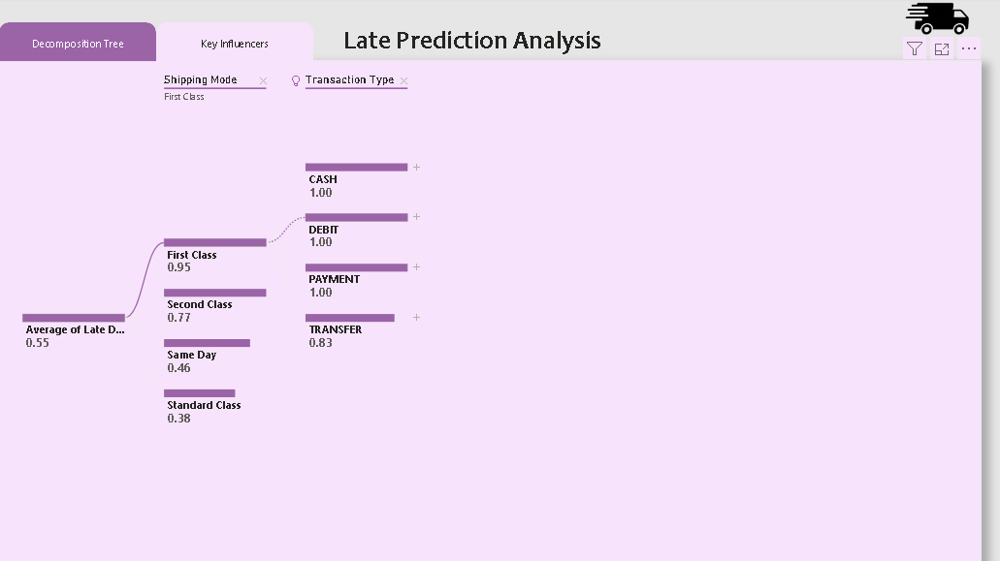

Furnishr
Introduction
This project aimed to optimize Furnishr’s end-to-end home furnishing experience by addressing critical data challenges. With nearly 100k products in their catalog and low repeatability in design packages, the project focused on analyzing customer orders (2021–2024) to identify patterns, improve supplier relationships, and provide actionable insights for scalability, sourcing, and logistics.
Project Objectives
- Identify the most repeated products in the catalog. - Analyze popular product combinations for various room types. - Discover styles, colors, and product features that drive sales. - Develop interactive dashboards to provide insights for decision-making. - Offer recommendations to enhance supplier efficiency and reduce risks.
Findings
Product Insights:
- Highlighted frequently purchased items, such as storage beds and lift-top coffee tables. Uncovered popular product combinations across Living Rooms, Kitchens, Bedrooms, and more.
-
Supplier Analysis:
- Reduced suppliers from 111 to 62 by retaining those active in 2023–2024. Key suppliers accounted for most sales, prompting a focus on strengthening these relationships. Recommended diversifying supplier base to mitigate risks of dependency.
-
Customer Segmentation:
- Grouped top customers into loyalty segments: Diamond: Spent over $50,000. Gold: Spent $25,000–$50,000. Silver: Spent less than $25,000. Designed exclusive benefits for Diamond customers to drive loyalty.
-
Room-Specific Trends:
- Beds were in high demand for bedrooms, while rugs and chairs were significant for other spaces. Pricing insights provided accurate budget estimates for furnishing entire rooms.
Deliverables
Dashboards
Sales Insights Dashboard: Showed sales trends by category, supplier, and product attributes (e.g., bunk beds, extendable tables). Designer Tool Dashboard: Helped designers find product alternatives quickly.
Mood Boards
Utilized machine learning to generate mood boards for popular product combinations, offering design inspiration for rooms like Living Rooms, Dining Rooms, and Outdoor Spaces.
Recommendations
Focus on partnerships with top-performing suppliers while maintaining backup options to reduce risks. Utilize insights from popular combinations and features to inform catalog updates and marketing strategies. Expand loyalty programs to increase customer retention, particularly for Diamond and Gold segments.
Conclusion
This project significantly improved Furnishr’s operational efficiency by addressing data challenges and providing actionable insights. The dashboards, mood boards, and customer segmentation empowered Furnishr to optimize sourcing, logistics, and customer experience, driving scalability and profitability.
Tools Used
- Power BI
- Power Query Editor
- Excel
- Data Analysis
- Machine Learning